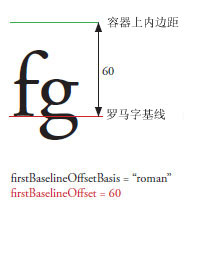
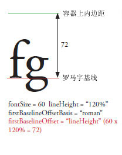
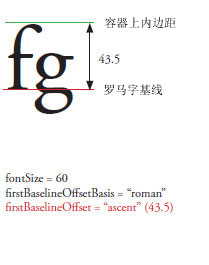

| 包 | fl.text |
| 类 | public class TLFTextField |
| 继承 | TLFTextField |
| 语言版本: | ActionScript 3.0 |
| 产品版本: | Flash CS5 |
| 运行时版本: | Flash Player 10, AIR 1.5 |
以与使用 TextField 类创建文本字段相同的方式创建 TLFTextField 对象。然后，使用 textFlow 属性从 TLF 类分配高级格式设置。例如：
import fl.text.TLFTextField; import flashx.textLayout.formats.TextLayoutFormat; import flashx.textLayout.elements.TextFlow; var myTLFTextField:TLFTextField = new TLFTextField(); addChild(myTLFTextField); myTLFTextField.x = 10; myTLFTextField.y = 10; myTLFTextField.width = 200 myTLFTextField.height = 100; myTLFTextField.text = "This is my text"; var myFormat:TextLayoutFormat = new TextLayoutFormat(); myFormat.textIndent = 8; myFormat.color = 0x336633; myFormat.fontFamily = "Arial, Helvetica, _sans"; myFormat.fontSize = 24; var myTextFlow:TextFlow = myTLFTextField.textFlow; myTextFlow.hostFormat = myFormat; myTextFlow.flowComposer.updateAllControllers();
相关 API 元素
 隐藏继承的公共属性
隐藏继承的公共属性 显示继承的公共属性
显示继承的公共属性| 属性 | 由以下参数定义 | ||
|---|---|---|---|
 | accessibilityImplementation : AccessibilityImplementation
InteractiveObject 实例的当前辅助功能实现 (AccessibilityImplementation)。 | InteractiveObject | |
| accessibilityProperties : AccessibilityProperties
此显示对象的当前辅助功能选项。 | DisplayObject | |
| alpha : Number
表示指定对象的 Alpha 透明度值。 | DisplayObject | |
| alwaysShowSelection : Boolean
如果设置为 true 且文本字段没有焦点，Flash Player 将以淡蓝色突出显示文本字段中的所选内容。 | TLFTextField | ||
| antiAliasType : String
用于此文本字段的消除锯齿类型。 | TLFTextField | ||
| autoSize : String
控制文本字段的自动大小调整和对齐。 | TLFTextField | ||
| background : Boolean
指定文本字段是否具有背景填充。 | TLFTextField | ||
| backgroundAlpha : Number
指定文本字段背景的 alpha 值。 | TLFTextField | ||
| backgroundColor : uint
指定文本字段背景的颜色。 | TLFTextField | ||
| blendMode : String
BlendMode 类中的一个值，用于指定要使用的混合模式。 | DisplayObject | |
| blendShader : Shader [只写]
设置用于混合前景和背景的着色器。 | DisplayObject | |
| blockProgression : Object
指定线位置的垂直或水平行进。 | TLFTextField | ||
| border : Boolean
指定文本字段是否具有边框。 | TLFTextField | ||
| borderAlpha : Number
指定边框的 Alpha 值。 | TLFTextField | ||
| borderColor : uint
指定文本字段边框的颜色。 | TLFTextField | ||
| borderWidth : Number
指定边框的宽度。 | TLFTextField | ||
| bottomScrollV : int [只读]
一个整数（从 1 开始的索引），表示指定文本字段中当前可以看到的最后一行。 | TLFTextField | ||
| buttonMode : Boolean
指定此 sprite 的按钮模式。 | Sprite | |
| cacheAsBitmap : Boolean
如果设置为 true，则 Flash 运行时将缓存显示对象的内部位图表示形式。 | DisplayObject | |
| cacheAsBitmapMatrix : Matrix
如果为非 null，则 Matrix 对象会定义显示对象在 cacheAsBitmap 设置为 true 时的呈现方式。 | DisplayObject | |
| caretIndex : int [只读]
插入点（尖号）位置的索引。 | TLFTextField | ||
| columnCount : Object
文本列数（如果在层叠期间未定义，则使用默认值）。 | TLFTextField | ||
| columnGap : Object
指定要在列之间留出的装订线空间量（以像素为单位），如果在层叠期间未定义，则使用默认值。 | TLFTextField | ||
| columnWidth : Object
列宽（以像素为单位）（如果在层叠期间未定义，则使用默认值）。 | TLFTextField | ||
| condenseWhite : Boolean
一个布尔值，指定是否删除具有 HTML 文本或 TLF 标记的文本字段中的额外空白（空格、换行符等等）。 | TLFTextField | ||
| constructor : Object
对类对象或给定对象实例的构造函数的引用。 | Object | |
| contextMenu : NativeMenu
指定与此对象相关联的上下文菜单。 | InteractiveObject | |
| defaultTextFormat : flash.text:TextFormat
指定应用于新插入文本（例如，用户输入的文本或使用 replaceSelectedText() 方法插入的文本）的格式。 | TLFTextField | ||
| direction : String
指定文本在文本块中的默认双向嵌入级别。 | TLFTextField | ||
| displayAsPassword : Boolean
指定文本字段是否是密码文本字段。 | TLFTextField | ||
| doubleClickEnabled : Boolean
指定此对象是否接收 doubleClick 事件。 | InteractiveObject | |
| dropTarget : DisplayObject [只读]
指定拖动 sprite 时经过的显示对象，或放置 sprite 的显示对象。 | Sprite | |
| embedFonts : Boolean
指定是否使用嵌入字体轮廓进行呈现。 | TLFTextField | ||
| filters : Array
包含当前与显示对象关联的每个滤镜对象的索引数组。 | DisplayObject | |
| firstBaselineOffset : Object
指定容器中第一行的基线位置。 | TLFTextField | ||
| focusRect : Object
指定此对象是否显示焦点矩形。 | InteractiveObject | |
| graphics : Graphics [只读]
指定属于此 sprite 的 Graphics 对象，在此 sprite 中可执行矢量绘图命令。 | Sprite | |
| gridFitType : String
用于此文本字段的网格固定类型。 | TLFTextField | ||
| height : Number
表示显示对象的高度，以像素为单位。 | DisplayObject | |
| hitArea : Sprite
指定一个 sprite 用作另一个 sprite 的点击区域。 | Sprite | |
| htmlText : String
包含文本字段内容的 HTML 表示形式。 | TLFTextField | ||
| length : int [只读]
文本字段中的字符数。 | TLFTextField | ||
| loaderInfo : LoaderInfo [只读]
返回一个 LoaderInfo 对象，其中包含加载此显示对象所属的文件的相关信息。 | DisplayObject | |
| mask : DisplayObject
调用显示对象被指定的 mask 对象遮罩。 | DisplayObject | |
| maxChars : int
文本字段中最多可包含的字符数（即用户输入的字符数）。 | TLFTextField | ||
| maxScrollH : int [只读]
scrollH 的最大值。 | TLFTextField | ||
| maxScrollV : int [只读]
scrollV 的最大值。 | TLFTextField | ||
| metaData : Object
如果元数据是通过 PlaceObject4 标记与此 DisplayObject 的实例一起存储在 SWF 文件中的，则获取 DisplayObject 实例的元数据对象。 | DisplayObject | |
| mouseChildren : Boolean
确定对象的子级是否支持鼠标或用户输入设备。 | DisplayObjectContainer | |
| mouseEnabled : Boolean
指定此对象是否接收鼠标或其他用户输入、消息。 | InteractiveObject | |
| mouseWheelEnabled : Boolean
一个布尔值，表示当用户单击某个文本字段并滚动鼠标滚轮时，Flash Player 是否自动滚动多行文本字段。 | TLFTextField | ||
| mouseX : Number [只读]
表示此鼠标或用户输入设备位置的 x 坐标，以像素为单位。 | DisplayObject | |
| mouseY : Number [只读]
表示此鼠标或用户输入设备位置的 y 坐标，以像素为单位。 | DisplayObject | |
| multiline : Boolean
指示文本字段是否为多行文本字段。 | TLFTextField | ||
| name : String
表示 DisplayObject 的实例名称。 | DisplayObject | |
| needsSoftKeyboard : Boolean
指定当该 InteractiveObject 实例获得焦点时，是否显示虚拟键盘（显示在屏幕上的软键盘）。 | InteractiveObject | |
| numChildren : int [只读]
返回此对象的子项数目。 | DisplayObjectContainer | |
| numLines : int [只读]
定义多行文本字段中的文本行数。 | TLFTextField | ||
| opaqueBackground : Object
指定显示对象是否由于具有某种背景颜色而不透明。 | DisplayObject | |
| paddingBottom : Object
底部边界（以像素为单位）（如果在层叠期间未定义，则使用默认值）。 | TLFTextField | ||
| paddingLeft : Object
左边边界（以像素为单位）（如果在层叠期间未定义，则使用默认值）。 | TLFTextField | ||
| paddingRight : Object
右边边界（以像素为单位）（如果在层叠期间未定义，则使用默认值）。 | TLFTextField | ||
| paddingTop : Object
顶部边界（以像素为单位）（如果在层叠期间未定义，则使用默认值）。 | TLFTextField | ||
| parent : DisplayObjectContainer [只读]
表示包含此显示对象的 DisplayObjectContainer 对象。 | DisplayObject | |
| pixelMaxScrollV : int [只读]
pixelScrollV 的最大值。 | TLFTextField | ||
| pixelScrollV : int
文本在文本字段中的垂直位置（以像素为单位），与 scrollV 不同，后者以行为单位。 | TLFTextField | ||
| restrict : String
表示用户可输入到文本字段中的字符集。 | TLFTextField | ||
| root : DisplayObject [只读]
对于加载的 SWF 文件中的显示对象，root 属性是此 SWF 文件所表示的显示列表树结构部分中的顶级显示对象。 | DisplayObject | |
| rotation : Number
表示 DisplayObject 实例距其原始方向的旋转程度，以度为单位。 | DisplayObject | |
| rotationX : Number
表示 DisplayObject 实例相对于 3D 父容器距离其原始方向的 x 轴旋转（以度为单位）。 | DisplayObject | |
| rotationY : Number
表示 DisplayObject 实例相对于 3D 父容器距离其原始方向的 y 轴旋转（以度为单位）。 | DisplayObject | |
| rotationZ : Number
表示 DisplayObject 实例相对于 3D 父容器距离其原始方向的 z 轴旋转（以度为单位）。 | DisplayObject | |
| scale9Grid : Rectangle
当前有效的缩放网格。 | DisplayObject | |
| scaleX : Number
表示从注册点开始应用的对象的水平缩放比例（百分比）。 | DisplayObject | |
| scaleY : Number
表示从对象注册点开始应用的对象的垂直缩放比例（百分比）。 | DisplayObject | |
| scaleZ : Number
表示从对象的注册点开始应用的对象的深度缩放比例（百分比）。 | DisplayObject | |
| scrollH : int
当前水平滚动位置。 | TLFTextField | ||
| scrollRect : Rectangle
显示对象的滚动矩形范围。 | DisplayObject | |
| scrollV : int
文本在文本字段中的垂直位置。 | TLFTextField | ||
| selectable : Boolean
一个布尔值，表示文本字段是否可选。 | TLFTextField | ||
| selectionBeginIndex : int [只读]
当前所选内容中第一个字符从零开始的字符索引值。 | TLFTextField | ||
| selectionEndIndex : int [只读]
当前所选内容中最后一个字符从零开始的字符索引值。 | TLFTextField | ||
| sharpness : Number
Sharpness 不适用于 TLF 文本字段。 | TLFTextField | ||
| softKeyboard : String
控制软键盘的外观。 | InteractiveObject | |
| softKeyboardInputAreaOfInterest : Rectangle
定义当显示软键盘时应在屏幕上保留的区域（在 iOS 上不支持）。 | InteractiveObject | |
| soundTransform : flash.media:SoundTransform
控制此 sprite 中的声音。 | Sprite | |
| stage : Stage [只读]
显示对象的舞台。 | DisplayObject | |
| styleSheet : StyleSheet
TLF 文本字段的样式表。 | TLFTextField | ||
| tabChildren : Boolean
确定对象的子项是否支持 Tab 键。 | DisplayObjectContainer | |
| tabEnabled : Boolean
指定此对象是否遵循 Tab 键顺序。 | InteractiveObject | |
| tabIndex : int
指定 SWF 文件中的对象按 Tab 键顺序排列。 | InteractiveObject | |
| text : String
作为文本字段中当前文本的字符串。 | TLFTextField | ||
| textColor : uint
文本字段中文本的颜色（采用十六进制格式）。 | TLFTextField | ||
| textFlow : flashx.textLayout.elements:TextFlow
使用此属性将 flashx 包中 TLF 类中的格式设置分配给 TLFTextField 实例。 | TLFTextField | ||
| textHeight : Number [只读]
文本的高度，以像素为单位。 | TLFTextField | ||
| textSnapshot : flash.text:TextSnapshot [只读]
返回此 DisplayObjectContainer 实例的 TextSnapshot 对象。 | DisplayObjectContainer | |
| textWidth : Number [只读]
文本的宽度，以像素为单位。 | TLFTextField | ||
| thickness : Number
thickness 属性不适用于 TLF 文本字段。 | TLFTextField | ||
| tlfMarkup : String
设置或获取 TLF 文本字段中文本的 TLF 标记。 | TLFTextField | ||
| transform : flash.geom:Transform
一个对象，具有与显示对象的矩阵、颜色转换和像素范围有关的属性。 | DisplayObject | |
| type : String
文本字段的类型。 | TLFTextField | ||
| useHandCursor : Boolean
布尔值，表示当指针滑过 buttonMode 属性设置为 true 的 sprite 时是否显示指针手形（手形光标）。 | Sprite | |
| useRichTextClipboard : Boolean
指定是否将文本格式随文本一起复制到剪贴板。 | TLFTextField | ||
| verticalAlign : String
垂直对齐或两端对齐（如果在层叠期间未定义，则使用默认值）。 | TLFTextField | ||
| visible : Boolean
显示对象是否可见。 | DisplayObject | |
| width : Number
表示显示对象的宽度，以像素为单位。 | DisplayObject | |
| wordWrap : Boolean
一个布尔值，表示文本字段是否自动换行。 | TLFTextField | ||
| x : Number
表示 DisplayObject 实例相对于父级 DisplayObjectContainer 本地坐标的 x 坐标。 | DisplayObject | |
| y : Number
表示 DisplayObject 实例相对于父级 DisplayObjectContainer 本地坐标的 y 坐标。 | DisplayObject | |
| z : Number
表示 DisplayObject 实例相对于 3D 父容器沿 z 轴的 z 坐标位置。 | DisplayObject | |
| 方法 | 由以下参数定义 | ||
|---|---|---|---|
TLFTextField 对象的构造函数。 | TLFTextField | ||
|
将一个 DisplayObject 子实例添加到该 DisplayObjectContainer 实例中。 | DisplayObjectContainer | |
|
将一个 DisplayObject 子实例添加到该 DisplayObjectContainer 实例中。 | DisplayObjectContainer | |
| addEventListener(type:String, listener:Function, useCapture:Boolean = false, priority:int = 0, useWeakReference:Boolean = false):void
使用 EventDispatcher 对象注册事件侦听器对象，以使侦听器能够接收事件通知。 | EventDispatcher | |
将 newText 参数指定的字符串追加到文本字段的文本的末尾。 | TLFTextField | ||
|
表示安全限制是否会导致出现以下情况：在列表中忽略了使用指定 point 点调用 DisplayObjectContainer.getObjectsUnderPoint() 方法时返回的所有显示对象。 | DisplayObjectContainer | |
|
确定指定显示对象是 DisplayObjectContainer 实例的子项还是该实例本身。 | DisplayObjectContainer | |
|
将事件调度到事件流中。 | EventDispatcher | |
|
返回一个矩形，该矩形定义相对于 targetCoordinateSpace 对象坐标系的显示对象区域。 | DisplayObject | |
返回一个矩形，该矩形是字符的边框。 | TLFTextField | ||
在 x 和 y 参数指定的位置返回从零开始的字符索引值。 | TLFTextField | ||
|
返回位于指定索引处的子显示对象实例。 | DisplayObjectContainer | |
|
返回具有指定名称的子显示对象。 | DisplayObjectContainer | |
|
返回 DisplayObject 的 child 实例的索引位置。 | DisplayObjectContainer | |
如果给定一个字符索引，则返回同一段落中第一个字符的索引。 | TLFTextField | ||
返回给定 id 或已使用 <img> 标签添加到 HTML 格式文本字段中的图像或 SWF 文件的 DisplayObject 引用。 | TLFTextField | ||
在 x 和 y 参数指定的位置返回从零开始的行索引值。 | TLFTextField | ||
返回 charIndex 参数指定的字符所在的行的索引值（从零开始）。 | TLFTextField | ||
返回特定文本行中的字符数。 | TLFTextField | ||
返回给定文本行的度量信息。 | TLFTextField | ||
返回 lineIndex 参数指定的行中第一个字符的字符索引。 | TLFTextField | ||
返回 lineIndex 参数指定的行的文本。 | TLFTextField | ||
|
返回对象的数组，这些对象位于指定点下，并且是该 DisplayObjectContainer 实例的子项（或孙子项，依此类推）。 | DisplayObjectContainer | |
如果给定一个字符索引，则返回包含给定字符的段落的长度。 | TLFTextField | ||
|
返回一个矩形，该矩形根据 targetCoordinateSpace 参数定义的坐标系定义显示对象的边界，但不包括形状上的任何笔触。 | DisplayObject | |
返回 TextFormat 对象，其中包含 beginIndex 和 endIndex 参数指定的文本范围的格式信息。 | TLFTextField | ||
|
将 point 对象从舞台（全局）坐标转换为显示对象的（本地）坐标。 | DisplayObject | |
|
将二维点从舞台（全局）坐标转换为三维显示对象的（本地）坐标。 | DisplayObject | |
|
检查 EventDispatcher 对象是否为特定事件类型注册了任何侦听器。 | EventDispatcher | |
|
表示对象是否已经定义了指定的属性。 | Object | |
|
计算显示对象的边框，以确定它是否与 obj 显示对象的边框重叠或相交。 | DisplayObject | |
|
计算显示对象，以确定它是否与 x 和 y 参数指定的点重叠或相交。 | DisplayObject | |
如果具有指定的 fontName 和 fontStyle（其中 Font.fontType 为 flash.text.FontType.EMBEDDED_CFF）的嵌入字体可用，则返回 true。 | TLFTextField | ||
|
表示 Object 类的实例是否在指定为参数的对象的原型链中。 | Object | |
|
将三维显示对象的（本地）坐标的三维点转换为舞台（全局）坐标中的二维点。 | DisplayObject | |
|
将 point 对象从显示对象的（本地）坐标转换为舞台（全局）坐标。 | DisplayObject | |
|
表示指定的属性是否存在、是否可枚举。 | Object | |
|
从 DisplayObjectContainer 实例的子列表中删除指定的 child DisplayObject 实例。 | DisplayObjectContainer | |
|
从 DisplayObjectContainer 的子列表中指定的 index 位置删除子 DisplayObject。 | DisplayObjectContainer | |
|
从 DisplayObjectContainer 实例的子级列表中删除所有子 DisplayObject 实例。 | DisplayObjectContainer | |
|
从 EventDispatcher 对象中删除侦听器。 | EventDispatcher | |
使用 value 参数的内容替换当前所选内容。 | TLFTextField | ||
将 beginIndex 和 endIndex 参数指定的字符范围替换为 newText 参数的内容。 | TLFTextField | ||
|
显示虚拟键盘。 | InteractiveObject | |
|
更改现有子项在显示对象容器中的位置。 | DisplayObjectContainer | |
|
设置循环操作动态属性的可用性。 | Object | |
将第一个字符和最后一个字符的索引值（使用 beginIndex 和 endIndex 参数指定）指定的文本设置为所选内容。 | TLFTextField | ||
将 format 参数指定的文本格式应用于文本字段中的指定文本。 | TLFTextField | ||
|
允许用户拖动指定的 Sprite。 | Sprite | |
|
使用户可以在启用触摸的设备上拖动指定的 Sprite。 | Sprite | |
|
对源起于此对象的所有 MovieClip 递归停止时间轴执行。 | DisplayObjectContainer | |
|
结束 startDrag() 方法。 | Sprite | |
|
结束 startTouchDrag() 方法，用于启用触摸的设备。 | Sprite | |
|
交换两个指定子对象的 Z 轴顺序（从前到后顺序）。 | DisplayObjectContainer | |
|
在子级列表中两个指定的索引位置，交换子对象的 Z 轴顺序（前后顺序）。 | DisplayObjectContainer | |
|
返回此对象的字符串表示形式，其格式设置遵守区域设置特定的约定。 | Object | |
|
返回指定对象的字符串表示形式。 | Object | |
|
返回指定对象的原始值。 | Object | |
|
检查是否用此 EventDispatcher 对象或其任何祖代为指定事件类型注册了事件侦听器。 | EventDispatcher | |
| 事件 | 摘要 | 由以下参数定义 | ||
|---|---|---|---|---|
| [广播事件] Flash Player 或 AIR 应用程序获得操作系统焦点并变为活动状态时将调度此事件。 | EventDispatcher | ||
| 将显示对象添加到显示列表中时调度。 | DisplayObject | ||
| 在将显示对象直接添加到舞台显示列表或将包含显示对象的子树添加至舞台显示列表中时调度。 | DisplayObject | ||
| 在修改控件值后调度，这与 textInput 事件不同，后者是在修改值之前调度的。 | TLFTextField | |||
| 当用户从文本上下文菜单中选择“清除”（或“删除”）时调度。 | InteractiveObject | ||
| 用户在同一 InteractiveObject 上按下并释放用户指针设备的主按钮时调度。 | InteractiveObject | ||
| 当用户手势触发 AIR 应用程序中与此交互式对象相关联的上下文菜单时调度。 | InteractiveObject | ||
| 在用户为复制操作激活特定于平台的加速键组合或从文本上下文菜单中选择“复制”时调度。 | InteractiveObject | ||
| 在用户为剪切操作激活特定于平台的加速键组合或从文本上下文菜单中选择“剪切”时调度。 | InteractiveObject | ||
| [广播事件] Flash Player 或 AIR 应用程序失去操作系统焦点并变为非活动状态时将调度此事件。 | EventDispatcher | ||
| 如果 InteractiveObject 的 doubleClickEnabled 标志设置为 true，当用户在该对象上快速连续按下两次并释放指针设备的主按钮时调度。 | InteractiveObject | ||
| [播放事件] 播放头进入新帧时调度。 | DisplayObject | ||
| [广播事件] 播放头退出当前帧时调度。 | DisplayObject | ||
| 显示对象获得焦点后调度。 | InteractiveObject | ||
| 显示对象失去焦点后调度。 | InteractiveObject | ||
| [广播事件] 在帧显示对象的构造函数运行之后但在帧脚本运行之前调度。 | DisplayObject | ||
| 当用户使用 InteractiveObject 实例沿触摸面边缘创建接触点时调度（如在 Siri Remote for Apple TV 上沿触摸面边缘轻击）。有些设备也可能将这种接触解释为多个触摸事件的组合。 | InteractiveObject | ||
| 当用户在启用触摸设备上的同一 InteractiveObject 实例上按下两个接触点时（例如，在配有触摸屏的移动电话或平板电脑上的显示对象上按下和释放两个手指）调度。 | InteractiveObject | ||
| 当用户在启用触摸的设备上的 InteractiveObject 实例上移动接触点时（例如，在配有触摸屏的移动电话或平板电脑上的显示对象上从左向右移动手指）调度。 | InteractiveObject | ||
| 当用户在接触点处使用 InteractiveObject 实例执行旋转手势时（例如，将两个手指放在屏幕上，然后在配有触摸屏的移动电话或平板电脑上的显示对象上旋转这两个手指）调度。 | InteractiveObject | ||
| 当用户在接触点处使用 InteractiveObject 实例执行滑动手势（例如，在配有触摸屏的移动电话或平板电脑上用三根手指触摸屏幕，然后在一个显示对象上平行移动这三根手指）时调度。 | InteractiveObject | ||
| 当用户使用 InteractiveObject 实例创建接触点，然后点击启用触屏的设备时（例如，将几个手指放在显示对象上以打开菜单，然后点击一个手指在配有触摸屏的移动电话或平板电脑上选择一个菜单项）调度。 | InteractiveObject | ||
| 当用户在接触点处使用 InteractiveObject 实例执行缩放手势操作时（例如，将两个手指放在屏幕上，然后在配有触摸屏的移动电话或平板电脑上的显示对象上快速分开手指）调度。 | InteractiveObject | ||
| 此事件被调度到任何支持使用 IME 进行内联输入的客户端应用程序 | InteractiveObject | ||
| 用户按下某个键时调度。 | InteractiveObject | ||
| 用户尝试使用键盘导航更改焦点时调度。 | InteractiveObject | ||
| 用户释放某个键时调度。 | InteractiveObject | ||
| 当用户单击支持 HTML 的文本字段中的超链接（其中的 URL 以“event:”开头）时调度。 | TLFTextField | |||
| 当用户在同一 InteractiveObject 上按下并释放用户指针设备的中间按钮时调度。 | InteractiveObject | ||
| 当用户在 InteractiveObject 实例上按下指针设备的中间按钮时调度。 | InteractiveObject | ||
| 当用户在 InteractiveObject 实例上释放指针设备按钮时调度。 | InteractiveObject | ||
| 当用户在 InteractiveObject 实例上按下指针设备按钮时调度。 | InteractiveObject | ||
| 用户尝试使用指针设备更改焦点时调度。 | InteractiveObject | ||
| 用户移动 InteractiveObject 上的指针设备时调度。 | InteractiveObject | ||
| 用户将指针设备从 InteractiveObject 实例上移开时调度。 | InteractiveObject | ||
| 用户将指针设备移动到 InteractiveObject 实例上时调度。 | InteractiveObject | ||
| 当用户在 InteractiveObject 实例上释放指针设备按钮时调度。 | InteractiveObject | ||
| 当鼠标滚轮滚动到 InteractiveObject 实例上时调度。 | InteractiveObject | ||
| 当用户释放拖动手势时由拖动启动器 InteractiveObject 调度。 | InteractiveObject | ||
| 在将拖动对象放置到目标上且已通过对 DragManager.acceptDragDrop() 的调用接受该放置操作时，由目标 InteractiveObject 调度。 | InteractiveObject | ||
| 当拖动手势进入其边界时由 InteractiveObject 调度。 | InteractiveObject | ||
| 当拖动手势离开其边界时由 InteractiveObject 调度。 | InteractiveObject | ||
| 当拖动手势保持在其边界内时，由 InteractiveObject 持续调度。 | InteractiveObject | ||
| 在拖动操作开始时由在 DragManager.doDrag() 调用中指定为拖动启动器的 InteractiveObject 调度。 | InteractiveObject | ||
| 在拖动操作期间由在 DragManager.doDrag() 调用中指定为拖动启动器的 InteractiveObject 调度。 | InteractiveObject | ||
| 在用户为粘贴操作激活特定于平台的加速键组合或从文本上下文菜单中选择“粘贴”时调度。 | InteractiveObject | ||
| 当用户将活动笔针放低经过屏幕的邻近检测阈值上时调度。 | InteractiveObject | ||
| 当用户将活动笔针抬高放在屏幕的邻近检测阈值上时调度。 | InteractiveObject | ||
| 当用户将活动笔针移动到屏幕上但仍保留在邻近检测阈值中时调度。 | InteractiveObject | ||
| 当用户直接将活动笔针从此 InteractiveObject 上移开但仍保留在屏幕的邻近检测阈值中时调度。 | InteractiveObject | ||
| 当用户直接将活动笔针移动到此 InteractiveObject 上但仍保留在屏幕的邻近检测阈值中时调度。 | InteractiveObject | ||
| 当用户从此 InteractiveObject 及其任一子项中移开而仍保留在屏幕的邻近检测阈值中时调度。 | InteractiveObject | ||
| 当用户将活动笔针从显示列表中子项的对象树中滑过此 InteractiveObject 时（而仍保留在屏幕的邻近检测阈值中）时调度。 | InteractiveObject | ||
| 在用户首先在 InteractiveObject 实例上按下按钮，然后将指针设备移离 InteractiveObject 实例，释放指针设备上的按钮时调度。 | InteractiveObject | ||
| 将要从显示列表中删除显示对象时调度。 | DisplayObject | ||
| 在从显示列表中直接删除显示对象或删除包含显示对象的子树时调度。 | DisplayObject | ||
| [广播事件] 将要更新和呈现显示列表时调度。 | DisplayObject | ||
| 当用户在同一 InteractiveObject 上按下并释放用户指针设备的右按钮时调度。 | InteractiveObject | ||
| 当用户在 InteractiveObject 实例上按下指针设备按钮时调度。 | InteractiveObject | ||
| 当用户在 InteractiveObject 实例上释放指针设备按钮时调度。 | InteractiveObject | ||
| 用户将指针设备从 InteractiveObject 实例上移开时调度。 | InteractiveObject | ||
| 用户将指针设备移动到 InteractiveObject 实例上时调度。 | InteractiveObject | ||
| 用户滚动后由 TextField 对象调度。 | TLFTextField | |||
| 在用户为全选操作激活特定于平台的加速键组合或从文本上下文菜单中选择“全选”时调度。 | InteractiveObject | ||
| 在放开软键盘之后立即调度。 | InteractiveObject | ||
| 在放开软键盘之前立即调度。 | InteractiveObject | ||
| 在隐藏软键盘之后立即调度。 | InteractiveObject | ||
| 对象的 tabChildren 标志值发生更改时调度。 | InteractiveObject | ||
| 对象的 tabEnabled 标志发生更改时调度。 | InteractiveObject | ||
| 对象的 tabIndex 属性值发生更改时调度。 | InteractiveObject | ||
| 用户输入一个或多个文本字符时，Flash Player 将调度 textInput 事件。 | TLFTextField | |||
| 当用户第一次触摸启用触摸的设备时（例如，用手指触摸配有触摸屏的移动电话或平板）调度。 | InteractiveObject | ||
| 当用户移除与启用触摸的设备的接触时（例如，将手指从配有触摸屏的移动电话或平板电脑上抬起）调度。 | InteractiveObject | ||
| 当用户触碰设备时进行调度，而且会连续调度，直到接触点被删除。 | InteractiveObject | ||
| 当用户将接触点从启用触摸的设备上的 InteractiveObject 实例移开时（例如，在配有触摸屏的移动电话或平板电脑上，将手指从一个显示对象拖到另一个显示对象）调度。 | InteractiveObject | ||
| 当用户在启用触摸的设备的 InteractiveObject 实例上移动接触点时（例如，在配有触摸屏的移动电话或平板电脑上，将手指从显示对象外的一点拖动到显示对象上的一点）调度。 | InteractiveObject | ||
| 当用户移动接触点，使其远离启用触摸的设备上的 InteractiveObject 实例时（例如，在配有触摸屏的移动电话或平板电脑上将一个手指从显示对象上的一点移动到显示对象外的一点）调度。 | InteractiveObject | ||
| 当用户在启用触摸的设备的 InteractiveObject 实例上移动接触点时（例如，在配有触摸屏的移动电话或平板电脑上，将手指从显示对象外的一点拖动到显示对象上的一点）调度。 | InteractiveObject | ||
| 当用户在启用触摸设备上的已启动接触的同一 InteractiveObject 实例上抬起接触点时（例如，在配有触摸屏的移动电话或平板的显示对象上的某一点处按下并释放手指）调度。 | InteractiveObject | ||
alwaysShowSelection | 属性 |
alwaysShowSelection:Boolean| 语言版本: | ActionScript 3.0 |
| 运行时版本: | Flash Player 10, AIR 1.5 |
如果设置为 true 且文本字段没有焦点，Flash Player 将以淡蓝色突出显示文本字段中的所选内容。如果设置为 false 且文本字段没有焦点，则 Flash Player 不会突出显示文本字段中的所选内容。
示例：
package
{
import flash.display.Sprite;
import fl.text.TLFTextField;
import flash.text.TextFieldType;
public class TLFTextField_alwaysShowSelection extends Sprite
{
public function TLFTextField_alwaysShowSelection()
{
var label1:TLFTextField = createTLFTextField(0, 20, 200, 20);
label1.text = "This text is selected.";
label1.setSelection(0, 9);
label1.alwaysShowSelection = true;
var label2:TLFTextField = createTLFTextField(0, 50, 200, 20);
label2.text = "Drag to select some of this text.";
}
private function createTLFTextField(x:Number, y:Number, width:Number, height:Number):TLFTextField
{
var result:TLFTextField = new TLFTextField();
result.x = x;
result.y = y;
result.width = width;
result.height = height;
addChild(result);
return result;
}
}
}
默认值为 false。
实现
public function get alwaysShowSelection():Boolean public function set alwaysShowSelection(value:Boolean):void相关 API 元素
antiAliasType | 属性 |
antiAliasType:String| 语言版本: | ActionScript 3.0 |
| 运行时版本: | Flash Player 10, AIR 1.5 |
用于此文本字段的消除锯齿类型。将 flash.text.AntiAliasType 常数用于此属性。仅在字体为嵌入（即 embedFonts 属性设置为 true）时可以控制此设置。
要设置此属性的值，请使用下列字符串值：
| 字符串值 | 说明 |
|---|---|
flash.text.AntiAliasType.NORMAL | 应用常规文本消除锯齿功能。这与 Flash Player 7 和更早版本中使用的消除锯齿类型匹配。 |
flash.text.AntiAliasType.ADVANCED | 应用高级消除锯齿功能，这增加了文本的可读性。（此功能在 Flash Player 8 中可用。）高级消除锯齿功能可以高品质呈现小尺寸的字体。它最适合在具有大量小字号文本的应用程序中使用。建议不要对大于 48 点的字体使用高级消除锯齿功能。 |
默认值为 flash.text.AntiAliasType.NORMAL。
实现
public function get antiAliasType():String public function set antiAliasType(value:String):void相关 API 元素
autoSize | 属性 |
autoSize:String| 语言版本: | ActionScript 3.0 |
| 运行时版本: | Flash Player 10, AIR 1.5 |
控制文本字段的自动大小调整和对齐。TextFieldAutoSize 常数的可接受值为 TextFieldAutoSize.NONE（默认值）、TextFieldAutoSize.LEFT、TextFieldAutoSize.RIGHT 和 TextFieldAutoSize.CENTER。
如果 autoSize 设置为 TextFieldAutoSize.NONE（默认值），则不会进行调整。
如果 autoSize 设置为 TextFieldAutoSize.LEFT，会将文本视为左对齐文本，这意味着该文本字段的左边距保持固定，在右边可调整单个文本字段行。如果文本中包括换行符（例如 "\n" 或 "\r"），则会另外调整底边来适合文本的下一行。如果 wordWrap 也设置为 true，则仅调整文本字段的底边，而右边距保持固定。
如果 autoSize 设置为 TextFieldAutoSize.RIGHT，会将文本视为右对齐文本，这意味着该文本字段的右边距保持固定，可在左边调整单个文本字段行。如果文本中包括换行符（例如 "\n" 或 "\r")，则会另外调整底边来适合文本的下一行。如果 wordWrap 也设置为 true，则仅调整文本字段的底边，而左边距保持固定。
如果 autoSize 设置为 TextFieldAutoSize.CENTER，会将文本视为居中对齐文本，这意味着对单个文本字段行的调整将使其在左右边距间均衡分布。如果文本中包括换行符（例如 "\n" 或 "\r"），则会另外调整底边来适合文本的下一行。如果 wordWrap 也设置为 true，则仅调整文本字段的底边，而左右边距保持固定。
实现
public function get autoSize():String public function set autoSize(value:String):void引发
ArgumentError — 指定的 autoSize 不是 flash.text.TextFieldAutoSize 的成员。
|
相关 API 元素
background | 属性 |
backgroundAlpha | 属性 |
backgroundAlpha:Number| 语言版本: | ActionScript 3.0 |
| 运行时版本: | Flash Player 10, AIR 1.5 |
指定文本字段背景的 alpha 值。背景的 alpha 可以设置为 0（完全透明）和 1（完全不透明）之间的任意值。即使在当前没有背景，也可以检索或设置此属性，但仅当文本字段已将 background 属性设置为 true 时，alpha 效果才可见。
默认值为 1.0。
实现
public function get backgroundAlpha():Number public function set backgroundAlpha(value:Number):void相关 API 元素
backgroundColor | 属性 |
blockProgression | 属性 |
blockProgression:Object| 语言版本: | ActionScript 3.0 |
| 产品版本: | Flash CS5 |
| 运行时版本: | Flash Player 10, AIR 1.5 |
指定线位置的垂直或水平行进。将行按照从上至下（BlockProgression.TB，用于水平文本行）或从右至左（BlockProgression.RL，用于垂直文本行）的顺序放置。
合法值为 flashx.textLayout.formats.BlockProgression.RL、flashx.textLayout.formats.BlockProgression.TB 和 flashx.textLayout.formats.FormatValue.INHERIT。
如果在层叠期间未定义，则此属性将从一个祖代继承值。如果没有祖代设置此属性，则其值为 TB。
默认值为 undefined (indicates not set)。
实现
public function get blockProgression():Object public function set blockProgression(value:Object):void相关 API 元素
border | 属性 |
borderAlpha | 属性 |
borderAlpha:Number| 语言版本: | ActionScript 3.0 |
| 运行时版本: | Flash Player 10, AIR 1.5 |
指定边框的 Alpha 值。边框的 alpha 可以设置为 0（完全透明）和 1（完全不透明）之间的任意值。即使当前没有边框，也可以检索或设置此属性，但仅当文本字段已将 border 属性设置为 true 时，alpha 效果才可见。
默认值为 1.0。
实现
public function get borderAlpha():Number public function set borderAlpha(value:Number):void相关 API 元素
borderColor | 属性 |
borderWidth | 属性 |
borderWidth:Number| 语言版本: | ActionScript 3.0 |
| 运行时版本: | Flash Player 10, AIR 1.5 |
指定边框的宽度。边框的宽度可以设置为 1 和 100 之间的任意值。即使在当前没有边框，也可以检索或设置此属性，但仅当文本字段的 border 属性设置为 true 时，宽度才可见。
计算文本字段的宽度或高度时，将考虑边框的宽度。要获取不带边框的文本容器的宽度或高度，请从宽度或高度值中减去两次 borderWidth。
例如，txtHeight = tlf.height - (2 tlf.borderwidth);。
默认值为 1。
实现
public function get borderWidth():Number public function set borderWidth(value:Number):void相关 API 元素
bottomScrollV | 属性 |
caretIndex | 属性 |
caretIndex:int [只读] | 语言版本: | ActionScript 3.0 |
| 运行时版本: | Flash Player 10, AIR 1.5 |
插入点（尖号）位置的索引。如果没有显示任何插入点，则在将焦点恢复到字段时，值将为插入点所在的位置（通常为插入点上次所在的位置，如果字段不曾具有焦点，则为 0）。
选择范围索引是从零开始的（例如，第一个位置为 0、第二个位置为 1，依此类推）。
示例：
package
{
import flash.display.Sprite;
import flash.events.MouseEvent;
import fl.text.TLFTextField;
import flash.text.TextFieldType;
public class TLFTextField_caretIndex extends Sprite
{
public function TLFTextField_caretIndex()
{
var tlf:TLFTextField = createTLFTextField(10, 10, 100, 100);
tlf.wordWrap = true;
tlf.type = TextFieldType.INPUT;
tlf.text = "Click in this text field. Compare the difference between clicking without selecting versus clicking and selecting text.";
tlf.addEventListener(MouseEvent.CLICK, printCursorPosition);
}
private function printCursorPosition(event:MouseEvent):void
{
var tlf:TLFTextField = TLFTextField(event.currentTarget);
trace("caretIndex:", tlf.caretIndex);
trace("selectionBeginIndex:", tlf.selectionBeginIndex);
trace("selectionEndIndex:", tlf.selectionEndIndex);
}
private function createTLFTextField(x:Number, y:Number, width:Number, height:Number):TLFTextField
{
var result:TLFTextField = new TLFTextField();
result.x = x;
result.y = y;
result.width = width;
result.height = height;
addChild(result);
return result;
}
}
}
实现
public function get caretIndex():int相关 API 元素
columnCount | 属性 |
columnCount:Object| 语言版本: | ActionScript 3.0 |
| 运行时版本: | Flash Player 10, AIR 1.5 |
文本列数（如果在层叠期间未定义，则使用默认值）。该列数会覆盖其它列设置。该值是一个整数，如果未指定，则为 FormatValue.AUTO。如果未指定 columnCount，则系统使用 columnWidth 创建容器可容纳的尽可能多的列。
合法字符串值为 flashx.textLayout.formats.FormatValue.AUTO、flashx.textLayout.formats.FormatValue.INHERIT 及从 1 到 50 范围内的整数。
如果在层叠期间未定义，则此属性值为 AUTO。
默认值为 undefined (indicates not set)。
实现
public function get columnCount():Object public function set columnCount(value:Object):void相关 API 元素
columnGap | 属性 |
columnGap:Object| 语言版本: | ActionScript 3.0 |
| 运行时版本: | Flash Player 10, AIR 1.5 |
指定要在列之间留出的装订线空间量（以像素为单位），如果在层叠期间未定义，则使用默认值。
合法值为 0 到 1000 范围内的数字和 flashx.textLayout.formats.FormatValue.INHERIT。
如果在层叠期间未定义，则此属性值为 20。
默认值为 undefined (indicates not set)。
实现
public function get columnGap():Object public function set columnGap(value:Object):void相关 API 元素
columnWidth | 属性 |
columnWidth:Object| 语言版本: | ActionScript 3.0 |
| 产品版本: | Flash CS5 |
| 运行时版本: | Flash Player 10, AIR 1.5 |
列宽（以像素为单位）（如果在层叠期间未定义，则使用默认值）。如果指定了列宽而没有指定列数，则 TextLayout 将根据容器宽度和 columnGap 设置，尽可能多地创建具有该宽度的列。在最后一个列之后将留出任意空格。该值是一个数字。
合法值为字符串 flashx.textLayout.formats.FormatValue.AUTO、flashx.textLayout.formats.FormatValue.INHERIT，和 0 到 8000 范围内的数字。
如果在层叠期间未定义，则此属性值为 AUTO。
默认值为 undefined (indicates not set)。
实现
public function get columnWidth():Object public function set columnWidth(value:Object):void相关 API 元素
condenseWhite | 属性 |
condenseWhite:Boolean| 语言版本: | ActionScript 3.0 |
| 产品版本: | Flash CS5 |
| 运行时版本: | Flash Player 10, AIR 1.5 |
一个布尔值，指定是否删除具有 HTML 文本或 TLF 标记的文本字段中的额外空白（空格、换行符等等）。默认值为 false。condenseWhite 属性只影响使用 htmlText 属性（而非 text 属性）设置的 TLF 标记或文本。如果使用 text 属性设置文本，则忽略 condenseWhite。
如果 condenseWhite 设置为 true，请使用标准 HTML 标记（如 <br> 和 <p>）将换行符放在文本字段中。
请先设置 condenseWhite 属性，再设置 htmlText 属性或 tlfMarkup 属性。
下面的示例演示了如何使用 condenseWhite 属性从 tlfMarkup 内容中删除额外空白：
import fl.text.TLFTextField; var my_tlf:TLFTextField = new TLFTextField(); my_tlf.autoSize = 'left'; // This line removes white space from tlfMarkup my_tlf.condenseWhite = true; addChild(my_tlf); var my_markup:String = '<TextFlow xmlns="http://ns.adobe.com/textLayout/2008">' + ' <p>' + ' <span>Here is the first span.</span>' + ' \n' + ' <span>And here is the second span.</span>' + ' </p>' + '</TextFlow>'; my_tlf.tlfMarkup = my_markup;
默认值为 false。
实现
public function get condenseWhite():Boolean public function set condenseWhite(value:Boolean):void相关 API 元素
defaultTextFormat | 属性 |
defaultTextFormat:flash.text:TextFormat| 语言版本: | ActionScript 3.0 |
| 产品版本: | Flash CS5 |
| 运行时版本: | Flash Player 10, AIR 1.5 |
指定应用于新插入文本（例如，用户输入的文本或使用 replaceSelectedText() 方法插入的文本）的格式。
实现
public function get defaultTextFormat():flash.text:TextFormat public function set defaultTextFormat(value:flash.text:TextFormat):void相关 API 元素
direction | 属性 |
direction:String| 语言版本: | ActionScript 3.0 |
| 产品版本: | Flash CS5 |
| 运行时版本: | Flash Player 10, AIR 1.5 |
指定文本在文本块中的默认双向嵌入级别。从左到右的阅读顺序，如在拉丁风格的文本中，或者从右到左的阅读顺序，如阿拉伯语或希伯来语。此属性还影响在容器级别应用时列的方向。与文本一样，列可以为从左到右或从右到左排列。下面给出了一些示例：

合法值为 flashx.textLayout.formats.Direction.LTR、flashx.textLayout.formats.Direction.RTL 和 flashx.textLayout.formats.FormatValue.INHERIT。
如果在层叠期间未定义，则此属性将从一个祖代继承值。如果没有祖代设置此属性，则其值为 LTR。
默认值为 undefined (indicates not set)。
实现
public function get direction():String public function set direction(value:String):void相关 API 元素
displayAsPassword | 属性 |
displayAsPassword:Boolean| 语言版本: | ActionScript 3.0 |
| 产品版本: | Flash CS5 |
| 运行时版本: | Flash Player 10, AIR 1.5 |
指定文本字段是否是密码文本字段。如果此属性的值为 true，则文本字段被视为密码文本字段，并使用星号而不是实际字符来隐藏输入的字符。如果为 false，则不会将文本字段视为密码文本字段。启用密码模式时，“剪切”和“复制”命令及其对应的键盘快捷键将不起作用。此安全机制可防止不良用户使用快捷键在无人看管的计算机上破译密码。
默认值为 false。
实现
public function get displayAsPassword():Boolean public function set displayAsPassword(value:Boolean):voidembedFonts | 属性 |
embedFonts:Boolean| 语言版本: | ActionScript 3.0 |
| 产品版本: | Flash CS5 |
| 运行时版本: | Flash Player 10, AIR 1.5 |
指定是否使用嵌入字体轮廓进行呈现。如果为 false，则 Flash Player 使用设备字体呈现文本字段。
如果将文本字段的 embedFonts 属性设置为 true，则必须使用应用于该文本字段的 TextFormat 对象的 font 属性来指定该文本的字体。如果指定的字体未嵌入 SWF 文件，将以 fall back 字体显示文本。
默认值为 false。
实现
public function get embedFonts():Boolean public function set embedFonts(value:Boolean):void相关 API 元素
firstBaselineOffset | 属性 |
firstBaselineOffset:Object| 语言版本: | ActionScript 3.0 |
| 产品版本: | Flash CS5 |
| 运行时版本: | Flash Player 10, AIR 1.5 |
指定容器中第一行的基线位置。该属性引用的基线取决于容器级别的区域设置。对于日语和中文，为 TextBaseline.IDEOGRAPHIC_BOTTOM；对于所有其它语言，为 TextBaseline.ROMAN。从容器顶部边界（如果 blockProgression 是 RL 则为右侧边界）到第一行的基线之间的偏移可以是 BaselineOffset.ASCENT，表示等于行的 ascent（文本顶端或右端到基线的距离），也可以是 BaselineOffset.LINE_HEIGHT，表示等于第一行的高度，或者是任何固定值数字，用于指定绝对距离。BaselineOffset.AUTO 可将行的 ascent 与容器顶部边界对齐。

合法值为字符串 flashx.textLayout.formats.BaselineOffset.AUTO、flashx.textLayout.formats.BaselineOffset.ASCENT、flashx.textLayout.formats.BaselineOffset.LINE_HEIGHT、flashx.textLayout.formats.FormatValue.INHERIT 和 0 到 1000 范围内的数字。
如果在层叠期间未定义，则此属性将从一个祖代继承值。如果没有祖代设置此属性，则其值为 AUTO。
默认值为 undefined (indicates not set)。
实现
public function get firstBaselineOffset():Object public function set firstBaselineOffset(value:Object):void相关 API 元素
gridFitType | 属性 |
gridFitType:String| 语言版本: | ActionScript 3.0 |
| 产品版本: | Flash CS5 |
| 运行时版本: | Flash Player 10, AIR 1.5 |
用于此文本字段的网格固定类型。仅在文本字段的 flash.text.AntiAliasType 属性设置为 flash.text.AntiAliasType.ADVANCED 时才应用此属性。
使用的网格固定类型确定了 Flash Player 是否强制让粗水平线和垂直线适合像素网格或子像素网格。
对于 flash.text.GridFitType 属性，您可以使用下列字符串值：
| 字符串值 | 说明 |
|---|---|
flash.text.GridFitType.NONE | 指定无网格固定。不强制根据像素网格调整字型中的水平线和垂直线。建议对动画或大号字使用此设置。 |
flash.text.GridFitType.PIXEL | 指定粗水平线和垂直线适合像素网格。此设置仅适用于左对齐文本字段。要使用此设置，文本字段的 flash.dispaly.AntiAliasType 属性必须设置为 flash.text.AntiAliasType.ADVANCED。此设置通常能为左对齐文本提供最佳可读性。 |
flash.text.GridFitType.SUBPIXEL | 指定粗水平线和垂直线适合 LCD 显示器上的子像素网格。要使用此设置，文本字段的 flash.text.AntiAliasType 属性必须设置为 flash.text.AntiAliasType.ADVANCED。flash.text.GridFitType.SUBPIXEL 设置通常适合右对齐或居中的动态文本，有时，为了在动画与文本品质之间达到一种平衡，也可使用此设置。 |
默认值为 flash.text.GridFitType.PIXEL。
实现
public function get gridFitType():String public function set gridFitType(value:String):void相关 API 元素
htmlText | 属性 |
htmlText:String| 语言版本: | ActionScript 3.0 |
| 产品版本: | Flash CS5 |
| 运行时版本: | Flash Player 10, AIR 1.5 |
包含文本字段内容的 HTML 表示形式。
TLFTextField 实例支持以下 HTML 标签：
| 标签 | 说明 |
|---|---|
| 锚标签 |
<a> 标签创建超文本链接并支持以下属性：
|
| 粗体标签 |
<b> 标签以粗体形式呈现文本。粗体必须可用于所使用的字体。
|
| 换行标签 |
<br> 标记将在文本中创建一个换行符。
|
| 字体标签 |
<font> 标签指定一种字体或一个字体列表来显示文本。字体标签支持以下属性：
|
| 图像标签 |
使用 <img> 标记，可将外部图像文件（JPEG、GIF、PNG）、SWF 文件和影片剪辑嵌入到文本中。
注意：与 TextField 类不同，不支持下列属性： |
| 斜体标签 |
<i> 标签以斜体形式显示标签中的文本。斜体必须可用于所使用的字体。
|
| 列表项标签 | 注意：与 TextField 类不同，不支持 List 项标签。 |
| 段落标签 |
<p> 标签创建一个新段落。<p> 标签支持以下属性：
|
| Span 标签 |
<span> 标签支持以下属性：
|
| 文本格式标签 |
使用
|
| 下划线标签 |
<u> 标签为标签文本添加下划线。
|
Flash 还支持显式字符代码，如 &（ASCII 和号）和 €（Unicode € 符号）。
实现
public function get htmlText():String public function set htmlText(value:String):void相关 API 元素
length | 属性 |
maxChars | 属性 |
maxScrollH | 属性 |
maxScrollV | 属性 |
mouseWheelEnabled | 属性 |
mouseWheelEnabled:Boolean| 语言版本: | ActionScript 3.0 |
| 产品版本: | Flash CS5 |
| 运行时版本: | Flash Player 10, AIR 1.5 |
一个布尔值，表示当用户单击某个文本字段并滚动鼠标滚轮时，Flash Player 是否自动滚动多行文本字段。如果您想让文本字段在用户滚动鼠标滚轮时不随之滚动，或要实现您自己的文本字段滚动方式，可以使用此属性。
默认值为 true。
实现
public function get mouseWheelEnabled():Boolean public function set mouseWheelEnabled(value:Boolean):voidmultiline | 属性 |
multiline:Boolean| 语言版本: | ActionScript 3.0 |
| 产品版本: | Flash CS5 |
| 运行时版本: | Flash Player 10, AIR 1.5 |
指示文本字段是否为多行文本字段。如果值为 true，则文本字段为多行文本字段；如果值为 false，则文本字段为单行文本字段。在类型为 TextFieldType.INPUT 的字段中，multiline 值将确定 Enter 键是否创建新行（如果值为 false，则将忽略 Enter 键）。如果将文本粘贴到其 multiline 值为 false 的 TextField 中，则文本中将除去新行。
默认值为 false。
实现
public function get multiline():Boolean public function set multiline(value:Boolean):void相关 API 元素
numLines | 属性 |
paddingBottom | 属性 |
paddingBottom:Object| 语言版本: | ActionScript 3.0 |
| 产品版本: | Flash CS5 |
| 运行时版本: | Flash Player 10, AIR 1.5 |
底部边界（以像素为单位）（如果在层叠期间未定义，则使用默认值）。容器底部边缘与文本之间的空间。该值是一个数字。
对于水平文本，在含有多个列的可滚动容器中，第一列和后续列将填充部分显示为容器底部的空白，但是对于最后一列，如果文本没有完全填充，可能必须进行滚动才能看到填充。
合法值为 0 到 1000 范围内的数字和 flashx.textLayout.formats.FormatValue.INHERIT。
如果在层叠期间未定义，则此属性值为 0。
默认值为 undefined (indicates not set)。
实现
public function get paddingBottom():Object public function set paddingBottom(value:Object):void相关 API 元素
paddingLeft | 属性 |
paddingLeft:Object| 语言版本: | ActionScript 3.0 |
| 产品版本: | Flash CS5 |
| 运行时版本: | Flash Player 10, AIR 1.5 |
左边边界（以像素为单位）（如果在层叠期间未定义，则使用默认值）。容器左边缘与文本之间的空间。该值是一个数字。
对于垂直文本，在含有多个列的可滚动容器中，第一列和后续列将填充部分显示为容器末尾的空白，但是对于最后一列，如果文本没有完全填充，可能必须进行滚动才能看到填充。
合法值为 0 到 1000 范围内的数字和 flashx.textLayout.formats.FormatValue.INHERIT。
如果在层叠期间未定义，则此属性值为 0。
默认值为 undefined (indicates not set)。
实现
public function get paddingLeft():Object public function set paddingLeft(value:Object):void相关 API 元素
paddingRight | 属性 |
paddingRight:Object| 语言版本: | ActionScript 3.0 |
| 产品版本: | Flash CS5 |
| 运行时版本: | Flash Player 10, AIR 1.5 |
右边边界（以像素为单位）（如果在层叠期间未定义，则使用默认值）。容器右边缘与文本之间的空间。该值是一个数字。
合法值为 0 到 1000 范围内的数字和 flashx.textLayout.formats.FormatValue.INHERIT。
如果在层叠期间未定义，则此属性值为 0。
默认值为 undefined (indicates not set)。
实现
public function get paddingRight():Object public function set paddingRight(value:Object):void相关 API 元素
paddingTop | 属性 |
paddingTop:Object| 语言版本: | ActionScript 3.0 |
| 产品版本: | Flash CS5 |
| 运行时版本: | Flash Player 10, AIR 1.5 |
顶部边界（以像素为单位）（如果在层叠期间未定义，则使用默认值）。容器顶部边缘与文本之间的空间。该值是一个数字。
合法值为 0 到 1000 范围内的数字和 flashx.textLayout.formats.FormatValue.INHERIT。
如果在层叠期间未定义，则此属性值为 0。
默认值为 undefined (indicates not set)。
实现
public function get paddingTop():Object public function set paddingTop(value:Object):void相关 API 元素
passwordCharacter | 属性 |
passwordCharacter:String [只读] 获取或设置用于在密码块中隐藏字符的字符。
实现
tlf_internal function get passwordCharacter():StringpixelMaxScrollV | 属性 |
pixelScrollV | 属性 |
restrict | 属性 |
restrict:String| 语言版本: | ActionScript 3.0 |
| 产品版本: | Flash CS5 |
| 运行时版本: | Flash Player 10, AIR 1.5 |
表示用户可输入到文本字段中的字符集。如果 restrict 属性的值为 null，则可以输入任何字符。如果 restrict 属性的值为空字符串，则不能输入任何字符。如果 restrict 属性的值为一串字符，则只能在文本字段中输入该字符串中的字符。从左向右扫描该字符串。可以使用连字符 (-) 指定一个范围。只限制用户交互；脚本可将任何文本放入文本字段中。此属性不与属性检查器中的“嵌入字体”选项同步。
如果字符串以尖号 (^) 开头，则先接受所有字符，然后从接受字符集中排除字符串中 ^ 之后的字符。如果字符串不以尖号 (^) 开头，则最初不接受任何字符，然后将字符串中的字符包括在接受字符集中。
下例仅允许在文本字段中输入大写字符、空格和数字：
my_txt.restrict = "A-Z 0-9";
下例包含除小写字母之外的所有字符：
my_txt.restrict = "^a-z";
可以使用反斜杠输入 ^ 或 - 的本义。认可的反斜杠序列为 \-、\^ 或 \\。反斜杠在字符串中必须是一个本义字符，因此在 ActionScript 中指定时必须使用两个反斜杠。例如，下面的代码只包含短划线 (-) 和尖号 (^)：
my_txt.restrict = "\\-\\^";
可在字符串中的任何位置使用 ^，以在包含字符与排除字符之间进行切换。下面的代码只包含除大写字母 Q 之外的大写字母：
my_txt.restrict = "A-Z^Q";
可以使用 \u 转义序列构造 restrict 字符串。下面的代码只包含从 ASCII 32（空格）到 ASCII 126（代字号）之间的字符。
my_txt.restrict = "\u0020-\u007E";
默认值为 null。
实现
public function get restrict():String public function set restrict(value:String):voidscrollH | 属性 |
scrollH:int| 语言版本: | ActionScript 3.0 |
| 产品版本: | Flash CS5 |
| 运行时版本: | Flash Player 10, AIR 1.5 |
当前水平滚动位置。如果 scrollH 属性为 0，则不能水平滚动文本。此属性值是一个以像素为单位表示水平位置的整数。
水平滚动的单位是像素，而垂直滚动的单位是行。水平滚动以像素计量是因为您通常使用的大多数字体都是按比例隔开的；这意味着字符可以有不同的宽度。Flash Player 按行进行垂直滚动是因为用户通常希望看到完整的一行文本，而不是一行的局部。即使一行中包含多种字体，行的高度也会调整到与使用的最大字体相适合。
注意： scrollH 属性是从 0 开始的，不像 scrollV 垂直滚动属性是从 1 开始的。
实现
public function get scrollH():int public function set scrollH(value:int):void相关 API 元素
scrollV | 属性 |
scrollV:int| 语言版本: | ActionScript 3.0 |
| 产品版本: | Flash CS5 |
| 运行时版本: | Flash Player 10, AIR 1.5 |
文本在文本字段中的垂直位置。scrollV 属性可帮助用户定位到长篇文章的特定段落，还可用于创建滚动文本字段。
垂直滚动的单位是行，而水平滚动的单位是像素。如果显示的第一行是文本字段中的第一行，则 scrollV 设置为 1（而非 0）。水平滚动以像素计量是因为大多数字体都是按比例隔开的；这意味着字符可以有不同的宽度。Flash 按行进行垂直滚动是因为用户通常希望看到完整的一行文本，而不是一行的局部。即使一行上有多种字体，行的高度也会调整到与使用的最大字体相适合。
实现
public function get scrollV():int public function set scrollV(value:int):void相关 API 元素
selectable | 属性 |
selectable:Boolean| 语言版本: | ActionScript 3.0 |
| 产品版本: | Flash CS5 |
| 运行时版本: | Flash Player 10, AIR 1.5 |
一个布尔值，表示文本字段是否可选。值 true 表示文本可选。selectable 属性控制文本字段是否可选，而不控制它是否可编辑。与传统的动态文本字段或输入文本字段不同，如果 TLF 文本字段是可编辑的，则它始终是可选的。如果此属性设置为 false，并且输入类型设置为动态，则用户无法选择其文本。
如果 selectable 设置为 false，则文本字段中的文本不响应来自鼠标或键盘的选择命令，并且不能使用“复制”命令复制文本。如果 selectable 设置为 true，则可以使用鼠标或键盘选择文本字段中的文本，并且可以使用“复制”命令复制文本。
默认值为 true。
实现
public function get selectable():Boolean public function set selectable(value:Boolean):void相关 API 元素
selectionBeginIndex | 属性 |
selectionEndIndex | 属性 |
sharpness | 属性 |
styleSheet | 属性 |
styleSheet:StyleSheet| 语言版本: | ActionScript 3.0 |
| 产品版本: | Flash CS5 |
| 运行时版本: | Flash Player 10, AIR 1.5 |
TLF 文本字段的样式表。
实现
public function get styleSheet():StyleSheet public function set styleSheet(value:StyleSheet):voidtext | 属性 |
textColor | 属性 |
textFlow | 属性 |
textFlow:flashx.textLayout.elements:TextFlow| 语言版本: | ActionScript 3.0 |
| 产品版本: | Flash CS5 |
| 运行时版本: | Flash Player 10, AIR 1.5 |
使用此属性将 flashx 包中 TLF 类中的格式设置分配给 TLFTextField 实例。例如：
var myFormat:TextLayoutFormat = new TextLayoutFormat(); myFormat.textIndent = 8; myFormat.color = 0x336633; myFormat.fontFamily = "Arial, Helvetica, _sans"; myFormat.fontSize = 24; var myTextFlow:TextFlow = myTLFTextField.textFlow; myTextFlow.hostFormat = myFormat;
实现
public function get textFlow():flashx.textLayout.elements:TextFlow public function set textFlow(value:flashx.textLayout.elements:TextFlow):void相关 API 元素
textHeight | 属性 |
textWidth | 属性 |
thickness | 属性 |
tlfMarkup | 属性 |
tlfMarkup:String| 语言版本: | ActionScript 3.0 |
| 产品版本: | Flash CS5 |
| 运行时版本: | Flash Player 10, AIR 1.5 |
设置或获取 TLF 文本字段中文本的 TLF 标记。
标记规范发布于 http://sourceforge.net/projects/tlf.adobe/files/docs/TLF_2.0_specification.pdf/download。
实现
public function get tlfMarkup():String public function set tlfMarkup(value:String):void相关 API 元素
type | 属性 |
type:String| 语言版本: | ActionScript 3.0 |
| 产品版本: | Flash CS5 |
| 运行时版本: | Flash Player 10, AIR 1.5 |
文本字段的类型。以下两个 TextFieldType 常数中的任一个：TextFieldType.DYNAMIC，它指定用户无法编辑的可选 TLF 文本字段，或者 TextFieldType.INPUT ，它指定用户可以编辑可编辑的 TLF 文本字段。
默认值为 dynamic。
实现
public function get type():String public function set type(value:String):void引发
ArgumentError — 指定的 type 不是 flash.text.TextFieldType 的成员。
|
相关 API 元素
useRichTextClipboard | 属性 |
useRichTextClipboard:Boolean| 语言版本: | ActionScript 3.0 |
| 产品版本: | Flash CS5 |
| 运行时版本: | Flash Player 10, AIR 1.5 |
指定是否将文本格式随文本一起复制到剪贴板。设置为 true 时，Flash Player 会将 tlfMarkup 格式中的格式设置（如，对齐方式、粗体和斜体）复制到剪贴板中。
默认值为 false。
实现
public function get useRichTextClipboard():Boolean public function set useRichTextClipboard(value:Boolean):void相关 API 元素
verticalAlign | 属性 |
verticalAlign:String| 语言版本: | ActionScript 3.0 |
| 产品版本: | Flash CS5 |
| 运行时版本: | Flash Player 10, AIR 1.5 |
垂直对齐或两端对齐（如果在层叠期间未定义，则使用默认值）。确定 TextFlow 元素在容器内如何对齐。
合法值为 flashx.textLayout.formats.VerticalAlign.TOP、flashx.textLayout.formats.VerticalAlign.MIDDLE、flashx.textLayout.formats.VerticalAlign.BOTTOM、flashx.textLayout.formats.VerticalAlign.JUSTIFY 和 flashx.textLayout.formats.FormatValue.INHERIT。
如果在层叠期间未定义，则此属性值为 TOP。
默认值为 undefined (indicates not set)。
实现
public function get verticalAlign():String public function set verticalAlign(value:String):void相关 API 元素
wordWrap | 属性 |
TLFTextField | () | 构造函数 |
public function TLFTextField()| 语言版本: | ActionScript 3.0 |
| 产品版本: | Flash CS5 |
| 运行时版本: | Flash Player 10, AIR 1.5 |
TLFTextField 对象的构造函数。以与使用 TextField 类创建文本字段相同的方式创建 TLFTextField 对象，不同的是使用 TLFTextField() 构造函数。例如：
var myTLFTextField:TLFTextField = new TLFTextField();
相关 API 元素
appendText | () | 方法 |
createTextLayoutFormat | () | 方法 |
tlf_internal static function createTextLayoutFormat(format:flash.text:TextFormat):flashx.textLayout.formats:TextLayoutFormat参数
format:flash.text:TextFormat |
flashx.textLayout.formats:TextLayoutFormat |
getCharBoundaries | () | 方法 |
getCharIndexAtPoint | () | 方法 |
getFirstCharInParagraph | () | 方法 |
public function getFirstCharInParagraph(charIndex:int):int| 语言版本: | ActionScript 3.0 |
| 产品版本: | Flash CS5 |
| 运行时版本: | Flash Player 10, AIR 1.5 |
如果给定一个字符索引，则返回同一段落中第一个字符的索引。
参数
charIndex:int — 从零开始的字符索引值（例如，第一个字符的索引值是 0，第二个字符的索引值是 1，依此类推）。
|
int — 同一段落中从零开始的第一个字符索引值。
|
引发
RangeError — 指定的字符索引超出范围。
|
getImageReference | () | 方法 |
public function getImageReference(id:String):DisplayObject| 语言版本: | ActionScript 3.0 |
| 产品版本: | Flash CS5 |
| 运行时版本: | Flash Player 10, AIR 1.5 |
返回给定 id 或已使用 <img> 标签添加到 HTML 格式文本字段中的图像或 SWF 文件的 DisplayObject 引用。<img> 标签的格式如下：
<img src = 'filename.jpg' id = 'instanceName' >参数
id:String — 要匹配的 id（在 <img> 标签的 id 属性中）。
|
DisplayObject — 与图像或 SWF 文件（在文本字段的 <img> 标签中具有匹配 id 属性）对应的显示对象。对于从外部源加载的媒体，此对象是 Loader 对象，加载后，媒体对象是该 Loader 对象的子项。对于在 SWF 文件中嵌入的媒体，这是加载的对象。如果不存在具有匹配 id 的 <img> 标签，则此方法会返回 null。
|
相关 API 元素
getLineIndexAtPoint | () | 方法 |
getLineIndexOfChar | () | 方法 |
public function getLineIndexOfChar(charIndex:int):int| 语言版本: | ActionScript 3.0 |
| 产品版本: | Flash CS5 |
| 运行时版本: | Flash Player 10, AIR 1.5 |
返回 charIndex 参数指定的字符所在的行的索引值（从零开始）。
参数
charIndex:int — 从零开始的字符索引值（例如，第一个字符的索引值是 0，第二个字符的索引值是 1，依此类推）。
|
int — 从零开始的行索引值。
|
引发
RangeError — 指定的字符索引超出范围。
|
getLineLength | () | 方法 |
public function getLineLength(lineIndex:int):int| 语言版本: | ActionScript 3.0 |
| 产品版本: | Flash CS5 |
| 运行时版本: | Flash Player 10, AIR 1.5 |
返回特定文本行中的字符数。
参数
lineIndex:int — 需要其长度的行号。
|
int — 行中的字符数。
|
引发
RangeError — 指定的行号超出范围。
|
getLineMetrics | () | 方法 |
public function getLineMetrics(lineIndex:int):flash.text:TextLineMetrics| 语言版本: | ActionScript 3.0 |
| 产品版本: | Flash CS5 |
| 运行时版本: | Flash Player 10, AIR 1.5 |
返回给定文本行的度量信息。
参数
lineIndex:int — 需要相关度量信息的行号。
|
flash.text:TextLineMetrics — 一个 TextLineMetrics 对象。
|
引发
RangeError — 指定的行号超出范围。
|
相关 API 元素
getLineOffset | () | 方法 |
public function getLineOffset(lineIndex:int):int| 语言版本: | ActionScript 3.0 |
| 产品版本: | Flash CS5 |
| 运行时版本: | Flash Player 10, AIR 1.5 |
返回 lineIndex 参数指定的行中第一个字符的字符索引。
参数
lineIndex:int — 从零开始的行索引值（例如，第一行的索引值是 0，第二行的索引值是 1，依此类推）。
|
int — 行中第一个字符的索引值（从零开始）。
|
引发
RangeError — 指定的行号超出范围。
|
getLineText | () | 方法 |
public function getLineText(lineIndex:int):String| 语言版本: | ActionScript 3.0 |
| 产品版本: | Flash CS5 |
| 运行时版本: | Flash Player 10, AIR 1.5 |
返回 lineIndex 参数指定的行的文本。
参数
lineIndex:int — 从零开始的行索引值（例如，第一行的索引值是 0，第二行的索引值是 1，依此类推）。
|
String — 指定行中包含的文本字符串。
|
引发
RangeError — 指定的行号超出范围。
|
getParagraphLength | () | 方法 |
public function getParagraphLength(charIndex:int):int| 语言版本: | ActionScript 3.0 |
| 产品版本: | Flash CS5 |
| 运行时版本: | Flash Player 10, AIR 1.5 |
如果给定一个字符索引，则返回包含给定字符的段落的长度。长度与段落中的第一个字符（由 getFirstCharInParagraph() 返回）有关，与传入的字符索引无关。
参数
charIndex:int — 从零开始的字符索引值（例如，第一个字符的索引值是 0，第二个字符的索引值是 1，依此类推）。
|
int — 返回段落中的字符数。
|
引发
RangeError — 指定的字符索引超出范围。
|
相关 API 元素
getTextFormat | () | 方法 |
public function getTextFormat(beginIndex:int = -1, endIndex:int = -1):flash.text:TextFormat| 语言版本: | ActionScript 3.0 |
| 产品版本: | Flash CS5 |
| 运行时版本: | Flash Player 10, AIR 1.5 |
返回 TextFormat 对象，其中包含 beginIndex 和 endIndex 参数指定的文本范围的格式信息。在生成的 TextFormat 对象中，只设置指定的整个文本共有的属性。所有混合型属性（意味着它在文本中的不同位置有不同的值）的值都为 null。
如果没有为这些参数指定值，则此方法适用于文本字段中的所有文本。
下表描述三种可能的用法：
| 用法 | 说明 |
|---|---|
my_textField.getTextFormat() | 返回一个 TextFormat 对象，该对象包含文本字段中所有文本的格式设置信息。在结果 TextFormat 对象中只设置文本字段中所有文本共有的属性。所有混合型属性（意味着它在文本中的不同位置有不同的值）的值都为 null。 |
my_textField.getTextFormat(beginIndex:Number) | 返回一个 TextFormat 对象，其中包含 beginIndex 位置处字符的文本格式的一个副本。 |
my_textField.getTextFormat(beginIndex:Number,endIndex:Number) | 返回一个 TextFormat 对象，该对象包含从 beginIndex 到 endIndex-1 范围内文本的格式设置信息。在结果 TextFormat 对象中只设置特定范围内所有文本共有的属性。所有混合型属性（也就是说，在该范围内的不同位置有不同的值）的值都设置为 null。 |
参数
beginIndex:int (default = -1) | |
endIndex:int (default = -1)beginIndex 和 endIndex 值，则读取从 beginIndex 到 endIndex-1 的文本。
|
flash.text:TextFormat — 表示指定文本格式设置属性的 TextFormat 对象。
|
引发
RangeError — 指定的 beginIndex 或 endIndex 超出范围。
|
相关 API 元素
isFontCompatible | () | 方法 |
public function isFontCompatible(fontName:String, fontStyle:String):Boolean| 语言版本: | ActionScript 3.0 |
| 产品版本: | Flash CS5 |
| 运行时版本: | Flash Player 10, AIR 1.5 |
如果具有指定的 fontName 和 fontStyle（其中，Font.fontType 为 flash.text.FontType.EMBEDDED_CFF）的嵌入字体可用，则返回 true。从 Flash Player 10 开始，两种嵌入字体可显示在 SWF 文件中。FontType.EMBEDDED 字体仅用于 TextField 对象，FontType.EMBEDDED_CFF 用于 TLFTextField 和 flash.text.engine 类。这两种类型由 enumerateFonts() 函数返回的 Font 类的 fontType 属性加以区分。
TLFTextField 不能使用类型为 EMBEDDED 的字体。如果 embedFonts 设置为 true，并且在运行时唯一可用的具有指定名称和样式的字体为 EMBEDDED 类型，则 Flash Player 会使用 fall back 字体来呈现文本。
如果具有相同名称和样式的 EMBEDDED 和 EMBEDDED_CFF 字体均可用，则将选择 EMBEDDED_CFF 字体并使用 EMBEDDED_CFF 字体呈现文本。
参数
fontName:String — 要检查的嵌入字体的名称。
| |
fontStyle:String — 指定要检查的字体样式。使用 flash.text.FontStyle
|
Boolean — 如果兼容的嵌入字体可用，则为 true；否则为 false。
|
引发
ArgumentError — 指定的 fontStyle 不是 flash.text.FontStyle 的成员。
|
相关 API 元素
replaceSelectedText | () | 方法 |
replaceText | () | 方法 |
public function replaceText(beginIndex:int, endIndex:int, newText:String):void| 语言版本: | ActionScript 3.0 |
| 产品版本: | Flash CS5 |
| 运行时版本: | Flash Player 10, AIR 1.5 |
将 beginIndex 和 endIndex 参数指定的字符范围替换为 newText 参数的内容。正如所设计的一样，将替换从 beginIndex 到 endIndex-1 的文本。
参数
beginIndex:int — 替换范围开始位置的从零开始的索引值。
| |
endIndex:int — 所需文本范围后面的第一个字符的从零开始的索引位置。
| |
newText:String — 要用来替换指定范围字符的文本。
|
setSelection | () | 方法 |
public function setSelection(begIdx:int, endIdx:int):void| 语言版本: | ActionScript 3.0 |
| 产品版本: | Flash CS5 |
| 运行时版本: | Flash Player 10, AIR 1.5 |
将第一个字符和最后一个字符的索引值（使用 beginIndex 和 endIndex 参数指定）指定的文本设置为所选内容。如果两个参数值相同，则此方法会设置插入点，就如同设置 caretIndex 属性一样。
参数
begIdx:int — 所选内容中第一个字符从零开始的索引值（例如，第一个字符的索引值是 0，第二个字符的索引值是 1，依此类推）。
| |
endIdx:int — 所选内容中最后一个字符从零开始的索引值。
|
相关 API 元素
setTextFormat | () | 方法 |
public function setTextFormat(format:flash.text:TextFormat, beginIndex:int = -1, endIndex:int = -1):void| 语言版本: | ActionScript 3.0 |
| 产品版本: | Flash CS5 |
| 运行时版本: | Flash Player 10, AIR 1.5 |
将 format 参数指定的文本格式应用于文本字段中的指定文本。format 的值必须是指定所需文本格式设置更改的 TextFormat 对象。只有 format 的非空属性才会应用到文本字段。不会应用 format 的设置为 null 的任何属性。默认情况下，新创建的 TextFormat 对象的所有属性都设置为 null。
setTextFormat() 方法会更改应用于文本字段中一定范围的字符或整个文本的文本格式设置。要将 format 的属性应用于文本字段中的所有文本，请不要指定 beginIndex 和 endIndex 的值。要将 format 的属性应用于一定范围的文本，请指定 beginIndex 和 endIndex 参数的值。可以使用 length 属性来确定索引值。
TextFormat 对象中包含两种类型的格式设置信息：字符级格式设置和段落级格式设置。文本字段中的每个字符都可以有自己的字符格式设置，例如字体名称、字体大小、粗体和斜体。
对于段落，通过检查段落的第一个字符可了解整个段落的格式设置。段落格式设置的示例有左边距、右边距和缩进。
对于用户手动插入的任何文本或通过 replaceSelectedText() 方法替换的任何文本，将接收默认的文本格式设置（而非为文本插入点指定的格式设置）以应用于新文本。要为新文本设置默认格式，请使用 defaultTextFormat。
参数
format:flash.text:TextFormat — 一个包含字符和段落格式设置信息的 TextFormat 对象。
| |||||||||
beginIndex:int (default = -1) | |||||||||
endIndex:int (default = -1)beginIndex 和 endIndex 值，则更新从 beginIndex 到 endIndex-1 的文本。
请注意，对于用户手动插入的任何文本或通过 |
引发
RangeError — 指定的 beginIndex 或 endIndex 超出范围。
|
相关 API 元素
change | 事件 |
flash.events.Event属性 Event.type =
flash.events.Event.CHANGE| 语言版本: | ActionScript 3.0 |
| 产品版本: | Flash CS5 |
| 运行时版本: | Flash Player 10, AIR 1.5 |
在修改控件值后调度，这与 textInput 事件不同，后者是在修改值之前调度的。与 W3C DOM 事件模型版本的 change 事件（仅在控件失去焦点后调度此事件）不同，每当控件更改时即会调度 ActionScript 3.0 版本的 change 事件。例如，如果用户向文本字段中键入文本，则在每次键击后调度 change 事件。
示例：
package {
import flash.display.Sprite;
import fl.text.TLFTextField;
import flash.text.TextFieldType;
import flash.text.TextFormat;
import flash.text.TextFormatAlign;
import flash.events.Event;
import flash.events.TextEvent;
public class TLFTextField_Event_changeExample extends Sprite {
private var inputTLFTextField:TLFTextField = new TLFTextField();
private var headingTLFTextField:TLFTextField = new TLFTextField();
private var newFormat:TextFormat = new TextFormat();
public function TLFTextField_Event_changeExample() {
newFormat.bold = true;
newFormat.size = 18;
newFormat.color = 0xFF0000;
newFormat.align = TextFormatAlign.CENTER;
headingTLFTextField.defaultTextFormat = newFormat;
headingTLFTextField.x = 10;
headingTLFTextField.y = 10;
headingTLFTextField.background = true;
headingTLFTextField.backgroundColor = 0xF5F5DC;
headingTLFTextField.selectable = false;
this.addChild(headingTLFTextField);
headingTLFTextField.height = 30;
headingTLFTextField.width = 400;
inputTLFTextField.x = 10;
inputTLFTextField.y = 70;
inputTLFTextField.background = true;
inputTLFTextField.border = true;
inputTLFTextField.maxChars = 40;
inputTLFTextField.wordWrap = true;
inputTLFTextField.type = TextFieldType.INPUT;
this.addChild(inputTLFTextField);
inputTLFTextField.height = 20;
inputTLFTextField.width = 230;
inputTLFTextField.addEventListener(Event.CHANGE, changeHandler);
}
private function changeHandler(e:Event):void {
headingTLFTextField.text = inputTLFTextField.text;
}
}
}
Event.CHANGE 常量定义 change 事件对象的 type 属性值。
此事件具有以下属性：
| 属性 | 值 |
|---|---|
bubbles | true |
cancelable | false；没有要取消的默认行为。 |
currentTarget | 当前正在使用某个事件侦听器处理 Event 对象的对象。 |
target | 已修改其值的对象。target 不一定是显示列表中注册此事件侦听器的对象。请使用 currentTarget 属性来访问显示列表中当前正在处理此事件的对象。 |
link | 事件 |
flash.events.TextEvent属性 TextEvent.type =
flash.events.TextEvent.LINK| 语言版本: | ActionScript 3.0 |
| 产品版本: | Flash CS5 |
| 运行时版本: | Flash Player 10, AIR 1.5 |
当用户单击支持 HTML 的文本字段中的超链接（其中的 URL 以“event:”开头）时调度。URL 中“event:”后的其余部分将放在 LINK 事件的 text 属性中。
注意：仅在 Flash Player 生成此事件时（在本例中，当用户尝试输入文本时发生此事件）才发生默认行为（向文本字段中添加文本）。无法通过发送 textInput 事件来在文本字段中放置文本。
link 事件对象的 type 属性值。
此事件具有以下属性：
| 属性 | 值 |
|---|---|
bubbles | true |
cancelable | false；没有要取消的默认行为。 |
currentTarget | 当前正在使用某个事件侦听器处理 Event 对象的对象。 |
target | 包含已单击的超链接的文本字段。target 不一定是显示列表中注册此事件侦听器的对象。请使用 currentTarget 属性来访问显示列表中当前正在处理此事件的对象。 |
text | URL 中“event:”之后的其余部分 |
scroll | 事件 |
flash.events.Event属性 Event.type =
flash.events.Event.SCROLL| 语言版本: | ActionScript 3.0 |
| 产品版本: | Flash CS5 |
| 运行时版本: | Flash Player 10, AIR 1.5 |
用户滚动后 由 TextField 对象调度。
Event.SCROLL 常量定义 scroll 事件对象的 type 属性值。
此事件具有以下属性：
| 属性 | 值 |
|---|---|
bubbles | false |
cancelable | false；没有要取消的默认行为。 |
currentTarget | 当前正在使用某个事件侦听器处理 Event 对象的对象。 |
target | 已滚动的 TextField 对象。target 属性不一定是显示列表中注册此事件侦听器的对象。请使用 currentTarget 属性来访问显示列表中当前正在处理此事件的对象。 |
textInput | 事件 |
flash.events.TextEvent属性 TextEvent.type =
flash.events.TextEvent.TEXT_INPUT| 语言版本: | ActionScript 3.0 |
| 产品版本: | Flash CS5 |
| 运行时版本: | Flash Player 10, AIR 1.5 |
用户输入一个或多个文本字符时，Flash Player 将调度 textInput 事件。各种文本输入法都可以生成此事件，包括使用标准键盘、输入法编辑器 (IME)、语音识别系统以及粘贴不带格式设置或样式信息的纯文本的操作。
textInput 事件对象的 type 属性值。
注意：对于 Delete 或 Backspace 键不会调度此事件。
此事件具有以下属性：
| 属性 | 值 |
|---|---|
bubbles | true |
cancelable | true；调用 preventDefault() 方法以取消默认行为。 |
currentTarget | 当前正在使用某个事件侦听器处理 Event 对象的对象。 |
target | 在其中输入字符的文本字段。target 不一定是显示列表中注册此事件侦听器的对象。请使用 currentTarget 属性来访问显示列表中当前正在处理此事件的对象。 |
text | 用户输入的字符或字符序列。 |
Tue Jun 12 2018, 11:04 AM Z